Legends Classic
Play X-Men Legends (2004) on PC, built from your own copies of the games.
X-Men Legends came out on consoles only. Legends Classic takes the first game from your own Xbox disc and rebuilds it to run on your own PC copy of its sequel, X-Men Legends II: Rise of Apocalypse, with modern display options, controller support and saves of its own.
You need both games: your own X-Men Legends disc for the original Xbox, and your own copy of X-Men Legends II for PC, installed.
It is a builder, not a download: every file of the result is made on your computer from the two copies you own. This project ships no game content, and the builder makes no network connections.
Current release: 0.5.0-beta.1 (beta) - the first game's items, shops and drops. Stable: 0.4.0. All builds: releases.
Coming next: 0.6.0-beta.1 (in testing, not released yet) - online co-op inside the game for two to four players, and friends can join a game in progress at the host's next area, fights included.
Get it
The Ultimate Legends launcher (a portable zip, no install) does everything: it downloads the builder, runs it and installs the engine fix.
-
Set up X-Men Legends II
Set up X-Men Legends II in Ultimate Legends as usual. It installs xml2-fix, the engine fix the port needs.
-
Set up the port with your disc image
Open X-Men Legends - community port in the library, choose Set up, then pick your disc image (
.isoor XISO) and a destination folder. The launcher checks the image and shows the space and time the build needs. -
Build, then Play
Build takes 6-8 minutes the first time (rebuilds 2-3 minutes); you can hide it, cancel it and resume later. Then Play.
Windows 10 or 11, 64-bit, and about 8 GB of disk space. Steam Deck / Linux via Proton works as a compatibility path. PS2 and GameCube discs are different games and don't work. Imaging your disc, the command line and the Steam Deck: dumping guide and builder guide.
Screenshots
In-game captures of a player's own Legends Classic build (0.6.0 preview), taken on the developer's PC. Select a picture for the full size.

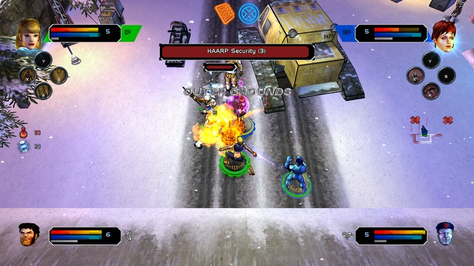

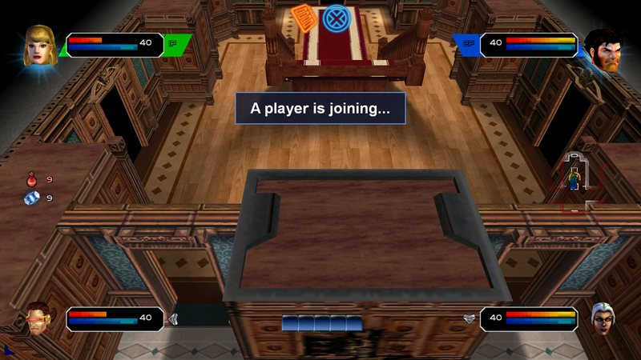

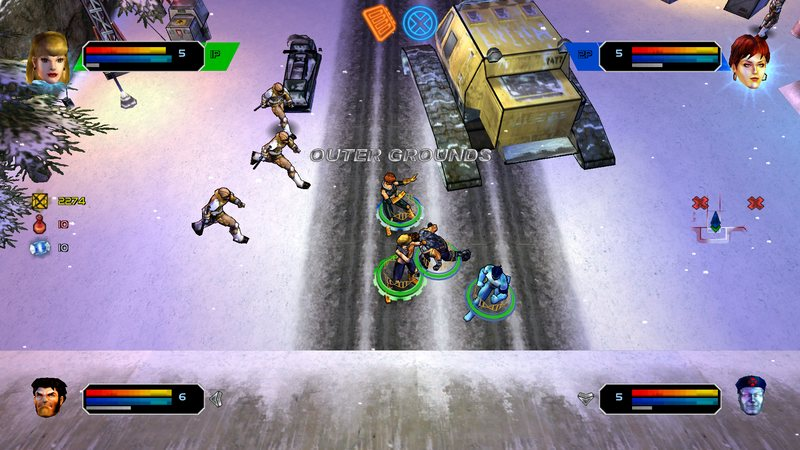

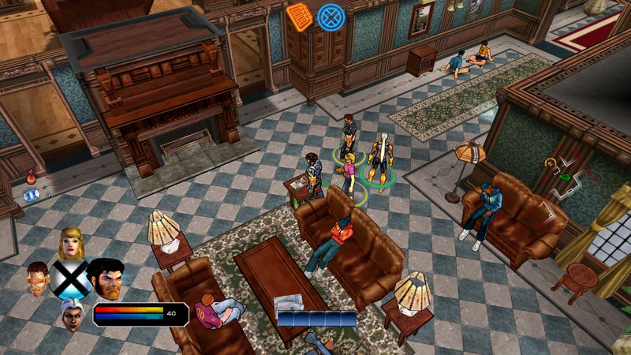

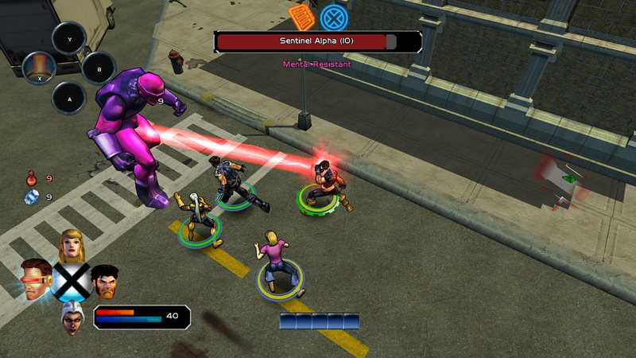

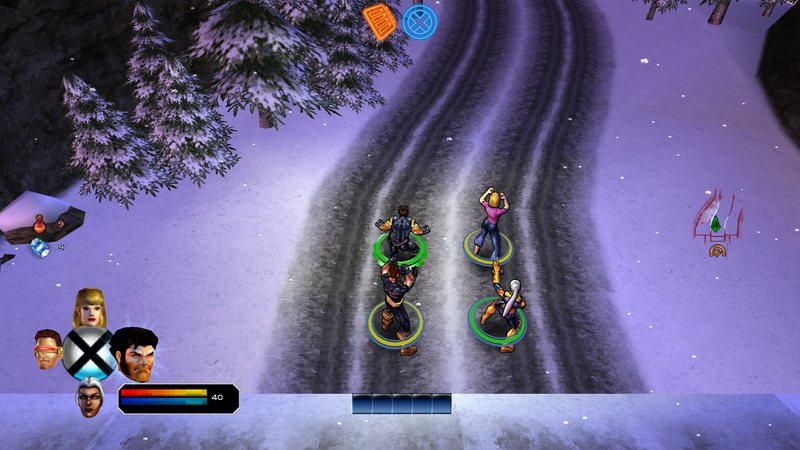

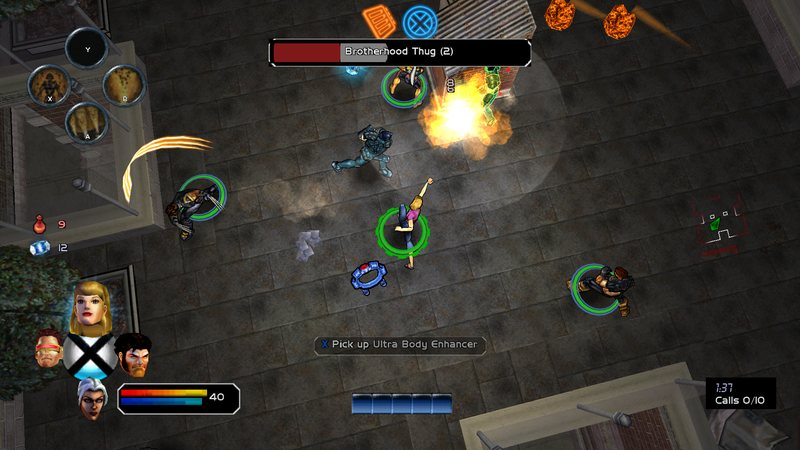

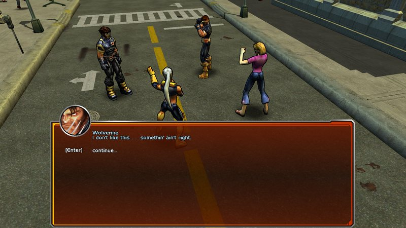

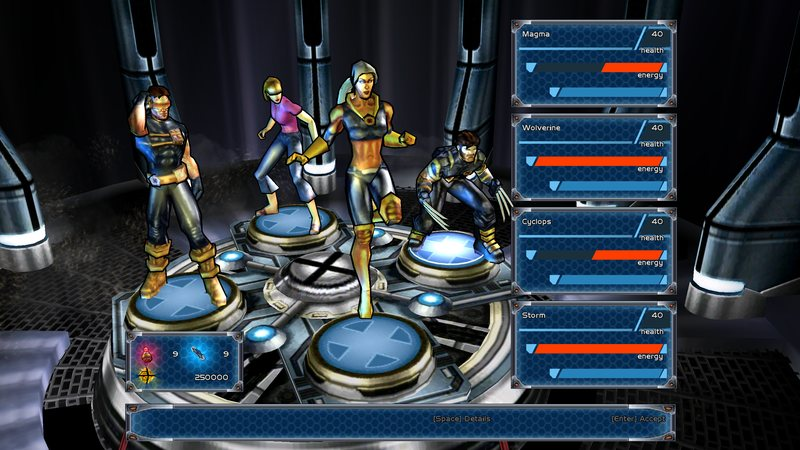

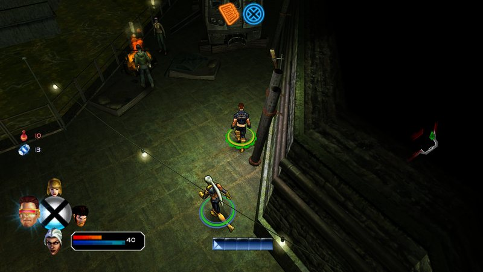


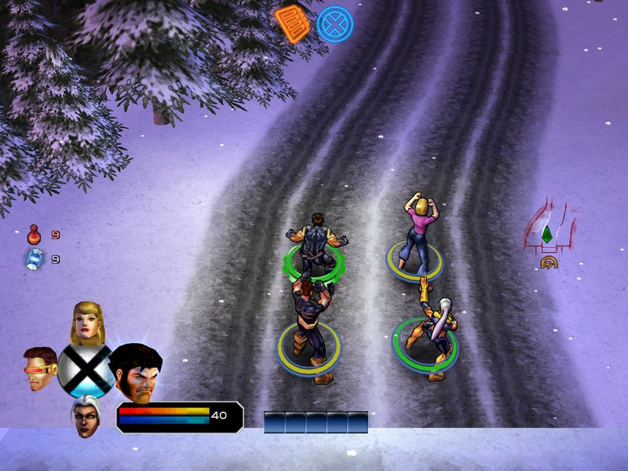
What you get
The campaign, the heroes, the front end and the display modes are verified on the developer's PC.
The whole campaign
The first game's story and zones, from the opening to the credits, with its movies and layered music.
The heroes
Every hero with the first game's stats, powers and level curve.
The classic look
The first game's front end: its menus, fonts, colours and HUD.
Online co-op, with drop-in 0.6
Two to four players from the game's own Play Online screen: Host a public or private room, Join by code or Browse, get ready in the lobby and manage the group from Party; no port forwarding. Friends can join a game in progress at the host's next area - through any exit, fights included - while the host sees "A player is joining..." (the host's DROP-IN setting turns that off per room). Up to 0.5 you start co-op from Ultimate Legends.
Modern display modes
Borderless, windowed or exclusive fullscreen at your desktop's resolution and refresh rate, with anti-aliasing.
Controllers and saves
Controller support, and saves of its own, separate from X-Men Legends II's.
Online co-op, drop-in and the display options are additions the first game never had, not part of what is matched to the original.
Honest limits
- The first game's loot and shops are still being checked. They are in the 0.5 beta; the stable 0.4.0 uses X-Men Legends II's drops and shops.
- Some fall kill zones stay off until each is proven safe.
- Enemies attack somewhat more often than in the original. Unarmed enemies still attack about 1.5 times as often per minute; the cause is not found yet.
- Online co-op is a beta. Tested on one PC and on two PCs at home, with two, three and four players, including fights. Not verified yet: playing through the relay, four players on four separate PCs, long sessions and joins over slow connections. If the host leaves, the session ends (until co-op recovery in 0.8).
Everything open, with measurements: known issues and issues.
Roadmap
- 0.6Online co-op for two to four players with drop-in (in testing, the next release)
- 0.7An optional "Remastered" graphics toggle, and save import from the original Xbox game
- 0.8Co-op recovery
- 1.0After a full hand-played run
Plans move with what testing finds. Full roadmap.
Community
- DiscordSetup help, bug reports, co-op partners.
- legends-classicThe builder: source, issues, changelog.
- ultimate-legendsThe launcher that sets it all up.
- xml2-fixThe engine fix the port needs.
The same rule everywhere: no game files, disc images or links to them.